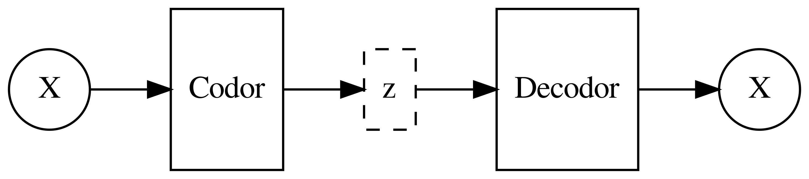
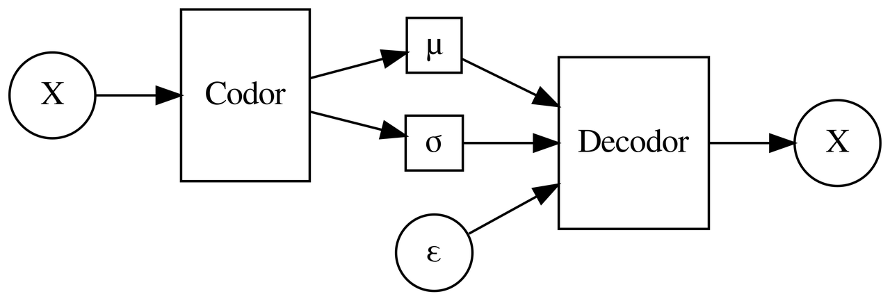
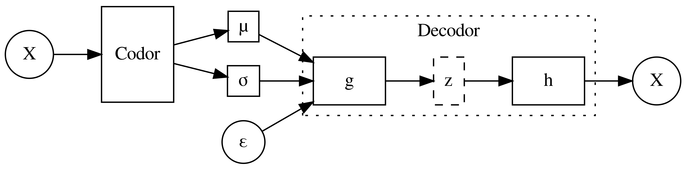

Variational Autoencoders pe înţelesul meu
Outline
- The core: latent variables and latent space
- The probabilistic perspective: \(p(l|w) \rightarrow p(z|w) \wedge p(l|z)\)
- The deep learning perspective:
ELBO lossand mapping function fromztol.
About
This post accompanies my talk about Variational Autoencoders for Iaşi AI. The slides of the talk are available
Motivaţie/Prolog
VAE este un subiect cu care m-am întâlnit din ce în ce mai des în ultimul timp şi vreau să-l înţeleg mai bine. Cel mai bun mod de a înţelege ceva este să explici acel ceva altor persoane şi de asta m-am decis să:
- Fac o prezentare despre
VAEîn cadrul Iaşi AI şi - Să scriu acest articol pe blog, în limba română, ca material suplimentar. De ce în limba română? Pentru că traducându-l din engleză mă forţez să îl înţeleg mai bine.
Ce este un Variational Autoencoder?
- Înainte să discutăm despre
VAEtrebuie să vorbim despre ce este unAutoencoderpentru a putea vedea mai bine similarităţile şi diferenţele (pentru a face o paralelă).
Ce este un Autoencoder?
- O arhitectură de reţea alcătuită din două părţi codor şi decodor (
encoderşi respectivdecoder) a cărui scop este să:- primească la intrare un vector \(X \in R^D\)
- îl codifice (
encode) într-o reprezentare \(z \in R^K\), unde \(K \ll D\) folosind o reţea neuronală. În termeni matematici, codificatorul (encoder) învaţă o funcţie \(g:R^D \rightarrow R^K\) - decodifice reprezentarea \(z\) în \(X\) original folosind o altă reţea neuronală. Altfel spus, decodorul (
decoder) învaţă funcţia \(f:R^K \rightarrow R^D\) aşa încât \(f(g(X))=X\).
- De ce ne interesează acest mecanizm? De exemplu, pentru identificarea anomaliilor: dacă \(X\) este o valoare extremă (
outlier) atunci \(f(g(X)) \neq X\).
Într-o singură imagine, arhitectura Auto Encoder arată aşa: 
Am desenat nodul \(z\) cu linie întreruptă pentru că în practică el nu se mai include în model ci se conectează codorul direct la decodor.
Variational Autoencoder
- Privind de la un nivel înalt, un
VAEare aceeaşi arhitectură ca unAutoencoder:- un codor (
encoder) care primeşte la intrare un \(X\) şi în transformă în reprezentarea latentă \(z\), - un decodor (
decoder) care, având reprezentarea latentă \(z\), învaţă să reconstruiască \(X\) original din \(z\).
- un codor (
- Diferenţa este dată de detalii, aşa cum spune vorba „The devil is in the details”.
- De ce i-am spus puntea de trecere dintre deep learning şi învăţare automată probabilistică? Pe baza experienţei proprii:
VAEeste un model/arhitectură foarte cunoscută şi foloseşte ambele domenii (vom vedea mai încolo cum). Pentru mine însă, malul (metaforic desigur) probabilistic era în ceaţă şi când am păşit acolo am descoperit o lume nouă, cel puţin la fel de interesantă ca lumea celuilalt mal — cel al reţelelor neuronale şi învăţării automate aprofundate. Totodată, unVAEpoate fi explicat din ambele puncte de vedere, aşa cum a făcut Jaan Altosaar în articolul1 său, dar dacă îl priveşti doar dintr-o singură perspectivă imaginea este neclară şi/sau incompletă. Abia văzut din ambele perspective, modelulVAEni se arată în toată splendoarea sa, ceea ce vom şi face în continuare.
VAE din perspectiva Deep Learning
Din perspectiva învăţării automate aprofundate, VAE este un autoencoder cu:
- o arhitectură mai complicată,
- funcţii de cost (
loss functions) mai ciudate, - două noduri de intrare, dintre care unul primeşte numere aleatorii,
- aplicarea a două artificii de calcul:
- Se optimizează o funcţie negată (despre asta mai târziu),
- Funcţia decodor primeşte ca parametru un număr aleator pentru a putea fi considerată derivabilă (şi implicit să poată fi învăţată).
Pornind de la arhitectură începem să identificăm şi diferenţele, din ce în ce mai evidente dintre un autoencoder clasic şi un VAE:

Din diagramă observăm că, spre deosebire de un autoencoder clasic, un VAE nu învaţă să identifice direct reprezentarea codificată a lui \(X\) — \(z\). Modelul de fapt învaţă următoarele:
- Codorul
- Învaţă să identifice parametrii care descriu distribuţia statistică a reprezentărilor latente. Cu alte cuvinte, codorul nu identifică o reprezentare directă a lui \(X\) ci identifică distribuţia statistică a reprezentărilor lui \(X\). Intuiţia din spatele acestui comportament este că dacă modelul va învăţa să genereze date asemănătoare celor din setul de antrenament atunci este foarte probabil să genereze date asemănătoare şi pentru celelalte date2. Cum o distribuţie poate fi descrisă prin media (\(\mu\)) şi deviaţia standard (\(\sigma\)), aceştia sunt parametrii identificaţi de codor.
- Decodorul
-
Învaţă de fapt două funcţii:
- O funcţie care transformă un punct din distribuţia dată de \((\mu, \sigma)\) într-un punct din spaţiul reprezentărilor latente ale lui \(X\). Cum face asta în cazul
VAE? Simplu: învaţă o funcţie care aranjează punctele unei distribuţii date de \((\mu, \sigma)\) în forma necesară pentru \(X\)2. - O funcţie care transformă reprezentarea latentă în instanţa primită la intrare.
Mergând mai departe cu diferenţele, trebuie să spunem că schema din imaginea anterioară este simplificată. Adevărata arhitectură a unui
VAEarată astfel: La fel ca şi în diagrama pentru
autoencoder, reprezentarea latentă \(z\) este desenată cu linie întreruptă deoarece în practică ea nu se regăseşte în model.Ultima diagramă, cea cu arhitectura completă, ne oferă şi imaginea clară a diferenţelor dintre un
autoencoderclasic şi unVAE: în cazulVAEnu mai vorbim de o compunere de funcţii cum am văzut în cazul unui autoencoder.Mai mult decât atât, un
VAEnu este un model generativ3 ci mai degrabă modelul generativ este o componentă a unuiVAE4 În principiu vorbim despre două componente diferite: (i) modelul propriu-zis şi reţeaua de inferenţă. - O funcţie care transformă un punct din distribuţia dată de \((\mu, \sigma)\) într-un punct din spaţiul reprezentărilor latente ale lui \(X\). Cum face asta în cazul
Comments
Comments powered by Disqus